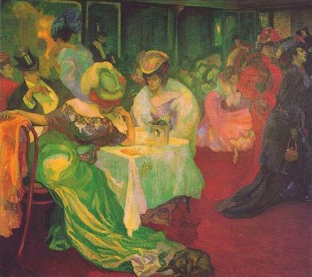
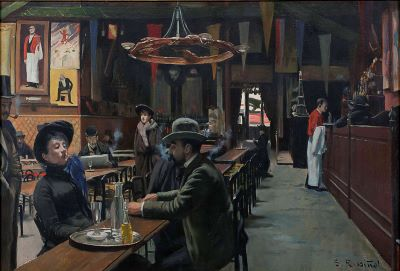
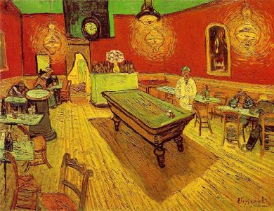
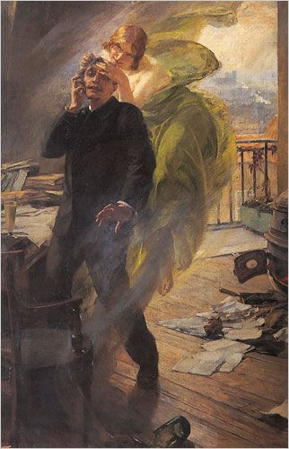
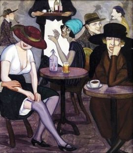

Drinkers
Abinthe Drinker (1895)
Description
Instead of providing a story, this page displays paintings of late-night drinkers.
Whereas art is often connoted with ideals and beauty today, these images vividly express people's anguish.
Suchlike art serves as a needed correction of modern perfectionism, a style that dominates social media and - arguably - the 'art world'.
The Imperfect
This series vividly illustrates the importance of less appealing art: the subjects' struggles can give people an idea of alcoholism and serve as warning. In other words, Online Museum chose this topic to have viewers reconsider the age-old question: "What is art?"
Note drinking colours
Axel Törneman ~ Nattcafé II (1906)
Café du Rat Mort, Paris
Santiago Rusiñol ~ Café des Incohérent (1890)
Café des Incohérents, Paris (Café of the disjointed)
"They call it 'nightcafé' where the 'prowlers of the night' can find a home." ~ Paraphrase Van Gogh about Café de la Gare
Vincent Van Gogh ~ Le Café de Nuit (1888)
Café de la Gare, Arles
Albert Maignan ~ La Muse Verte (1895)
Green fairy symbolizing absinthe takes over a man
“Creativity takes courage” ~ Henry Matisse
Victor Oliva ~ Piják Absintu (1895)
Café Slavia, Prague. 'Abinthe Drinker' still hangs on its walls
Shalva Kikodze ~ Dans un Café (1920)
'In a café'
